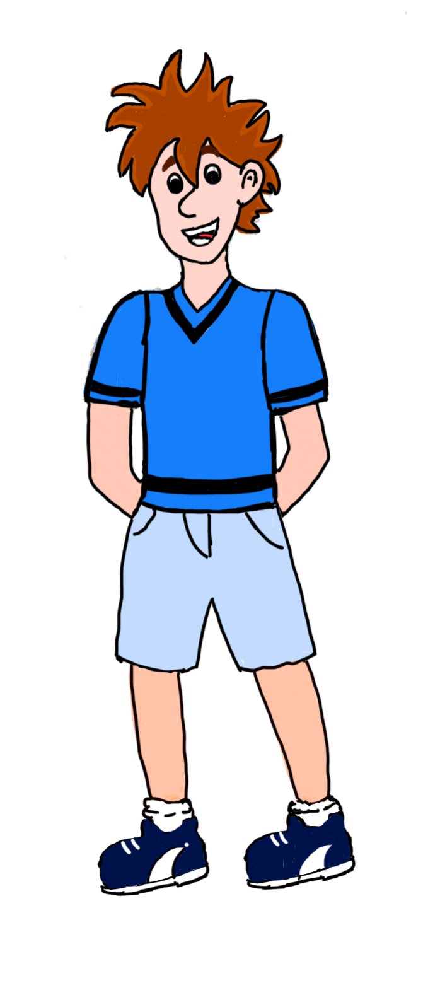

<div 
class="row">

    <div
class="col">

    <h2><p
style="color: rgb(67, 27, 159);">Peter Shaw</p></h2>

    <p><strong>🎂Alter:</strong>
 10 Jahre</p>

    <p><strong>📏Größe:</strong>
 ca. 1,50 m</p>

    <p><strong>⚖️Gewicht:</strong>
 etwa 40 kg</p>

    <p><strong>👦Aussehen:</strong>

– Braune Haare,

– sportlich,

– trägt oft Turnschuhe, blaue kurze Jeans und ein blaues T-Shirt</p>

    <p><strong>🎽 Merkmale:</strong>

– Hat meistens sein Dietrich-Set dabei

– Sehr sportlich (klettert gern, schwimmt gut)

– Kann ängstlich wirken, ist aber mutig, wenn’s zählt</p>


    <p><strong>📍Wohnort:</strong>
 Rocky Beach (Kalifornien) </p>

    <p><strong>📍Zuletzt gesehen:</strong>

Am 4.8.2025, ca. 15:30 Uhr

in der Nähe der Zentrale (im Gebrauchtwarencenter T. Jonas, Rocky Beach)</p>

<p><strong>

📞 Polizei

📍 Detektiv-Zentrale, Schrottplatz Jonas, Rocky Beach

🕵️‍♂️ Kennwort: „Die drei ??? Kids“</p>

<p><strong>🖨️ Bitte aushängen – jeder Hinweis zählt!

🔎 Gemeinsam finden wir die drei ???</strong></p>



    

</p></p>

     </div>

</div>
